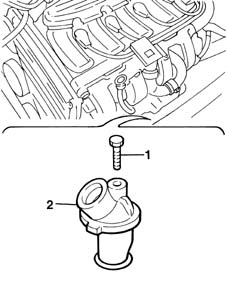
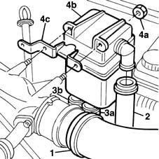

1080D34 engine oil vapour separator - r + r
- Path
- Procedures > 10 ENGINE UNIT > 1080 EXHAUST EMISSION CONTROL SYSTEM > 1080D crankcase vapour/gas recirculation system > 1080D34 engine oil vapour separator - r + r
- Kind
- repair procedure (removal / refitting; the operation number is the code)
- Applies to
- all engines; all production periods
- Interactive page
- https://sloeber94.github.io/elrnDB-fMltpl/en/#/2891304
Applies to: engines: 1.6 16v; all production periods
 Removing
Removing
 Refitting
Refitting1084A22 engine oil filler - r r
1. Undo the retaining bolts.
2. Remove the oil vapour separator.
Collect the underlying gasket.

Applies to: engines: 1.6 16v; all production periods
Refitting
RemovingReplace the oil separator gasket
Fit the oil vapour separator.
Tighten the bolts securing the separator to the engine block.
Applies to: engines: 1.9 JTD 8V; all production periods
Removing
Refitting1048A10 AIR CLEANER FILTERING ELEMENT - REPLACE
1016A10 sound-proofing cover - r + r
1. Remove the clamp and disconnect the pipe carrying air to the intake manifold.
2. Remove the clamp and disconnect the oil vapour separator pipe from the turbo air intake.
3. Disconnect sump oil return pipe (3a) and crankcase oil vapour inlet pipe (3b) from the separator.
4. Undo nuts (4a) and remove engine oil vapour separator (4b).

Applies to: engines: 1.9 JTD 8V; all production periods
Refitting
RemovingFit the fuel vapour separator.
Tighten the retaining nuts.
Connect the oil return pipe to the sump and the crankcase oil vapour intake pipe.
Use a new clamp to connect the air intake pipe to the intake manifold.
Use a new clamp to connect the oil vapour separator pipe to the turbocharger air inlet pipe.
Topics linked from this page (4)
- 1016A10 sound-proofing cover - r + r
- 1048A10 AIR CLEANER FILTERING ELEMENT - REPLACE
- 1084A22 engine oil filler - r r
- 5530B10 battery - r+r
Topics that link to this page (18)
- W02 CO EMISSIONS LOW, NOx EMISSIONS HIGH
- W05 WHITE EXHAUST FUMES
- W11 EXCESSIVE EXHAUST FUMES'
- 1016C11 single cylinder head-r r gasket for versions with air conditioner
- 1028H11 piston connecting rod set - r r
- 1060F30 fuel delivery manifold - r r
- 1060F36 lines to injectors - r r
- 1060G90 diesel injection wiring harness - r r
- 1072B10 inlet manifold - r + r and replace seal
- 1080D10 pipe carrying engine oil vapours from intake to separator - r + r
- 1080D30 engine oil recovery pipe - r + r
- 2710A34 intermediate drive shaft bearing support - r + r with intermediate drive shaft removed for versions with air conditioner
- 2710A35 intermediate drive shaft mount - r r
- 4130B21 power steering pump r r with interfering parts removed
- 4130B24 power steering pump r r for versions with air conditioner
- 4130B34 supply pipe from fluid resevior to power steering pump r r
- 5520C10 glow plugs - r+r
- 5530A14 alternator - r+r for versions with air conditioner